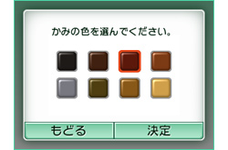

『Miiスタジオ』で「写真からつくる」を選び、性別、肌の色、目の色、かみの色、かみ型を順番に選んでいくと、カメラの画面に切り替わります。あとは、Aボタン、またはL/Rボタンで撮影します。
すると、撮影した顔写真がはりついた箱をかぶったMiiが、上画面で飛びはねたりクルクル回ったりしはじめます。箱がスポッと取れると、新しいMiiが登場します！
写真からのMii作成は、これまでの全部手動でのMii作成と比べると手順も少なく、はるかにカンタンな印象です。もちろん、手動で各パーツの細かい調整をしたり、メガネやホクロをつけたりといった設定をあとから加えることもできます。
自分でもっとそっくりなMiiを作りたい、またはオリジナリティのある変わった顔のMiiを作りたいなら、これまでどおり全部手動でMiiを作ることも可能です。Miiは最大で100人登録できるので、自分だけでなく家族や友だち、オリジナルキャラクターのMiiをドンドン作ってみてください！
写真からのMii作成は、これまでの全部手動でのMii作成と比べると手順も少なく、はるかにカンタンな印象です。もちろん、手動で各パーツの細かい調整をしたり、メガネやホクロをつけたりといった設定をあとから加えることもできます。
自分でもっとそっくりなMiiを作りたい、またはオリジナリティのある変わった顔のMiiを作りたいなら、これまでどおり全部手動でMiiを作ることも可能です。Miiは最大で100人登録できるので、自分だけでなく家族や友だち、オリジナルキャラクターのMiiをドンドン作ってみてください！
カメラで撮影する際には、内側のカメラだけでなく、外側のカメラを使うこともできます。正面からの顔なら認識するので、家族や友だちの写真だけでなく、似顔絵やすでに撮った写真などからMiiを作成してみるのも面白いでしょう！